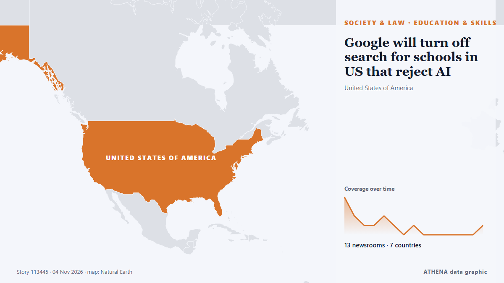

Bildung und Qualifikation
GesponsertPräsentiert von  Cybernetics and Artificial Intelligence Lab Welcome to the Cybernetics and Artificial Intelligence Laboratory, established at the Department of Business Administration of the National and Kapodistrian University of Athens. The lab is headed by Professor Dimitrios Thomakos. The lab aims to do research that can be published in top venues. Our research uses tools and methods of Artificial Intelligence, and lies in the following areas: - Forecasting - Decision making - Cyber security - Finance We are always looking forward to collaborating with exceptional students!
Cybernetics and Artificial Intelligence Lab Welcome to the Cybernetics and Artificial Intelligence Laboratory, established at the Department of Business Administration of the National and Kapodistrian University of Athens. The lab is headed by Professor Dimitrios Thomakos. The lab aims to do research that can be published in top venues. Our research uses tools and methods of Artificial Intelligence, and lies in the following areas: - Forecasting - Decision making - Cyber security - Finance We are always looking forward to collaborating with exceptional students!
| 22. Okt. | 0 |
|---|---|
| 23. Okt. | 0 |
| 24. Okt. | 0 |
| 25. Okt. | 0 |
| 26. Okt. | 1 |
| 27. Okt. | 0 |
| 28. Okt. | 0 |
| 29. Okt. | 0 |
| 30. Okt. | 2 |
| 31. Okt. | 5 |
| 1. Nov. | 5 |
| 2. Nov. | 8 |
| 3. Nov. | 2 |
| 4. Nov. | 1 |
Schlagzeilen werden auf Englisch angezeigt, wie veröffentlicht.

Google will turn off search for schools in US that reject AI
AI features are now a standard part of Google’s commercially available search engine. von The Straits Times
Students who are martyred are never marked absent
This report goes beyond words. It is about a deeply emotional gathering. von Tehran Times
Sam Fender soundtracks 2026 John Lewis Christmas advert with cover of The Rolling Stones’ ‘You Can’t Always Get What You Want’
The cover got the seal of approval from Mick Jagger too, who said that he thought Fender had “done a great job with it” von NME
Sheikh Mohamed marks UAE Flag Day at Qasr Al Hosn in Abu Dhabi
Abu Dhabi: President His Highness Sheikh Mohamed bin Zayed Al Nahyan raised the UAE flag at Qasr Al Hosn in Abu Dhabi on Tuesday to mark Flag Day, accompanied by 55 distinguished individuals from… von Gulf News
French school blockades to restart from Monday: Student group
France's protest movement against soaring prices emerged from weeks of demonstrations by high school students protesting deteriorating learning conditions and inequality. von CNA (Channel NewsAsia)
At Least 31 Killed in Russian Bomb Attack in Zaporizhzhia
Ukrainian officials said Russia bombed a school being used as an aid distribution point in a village in the village of Komyshuvakha. von The Moscow Times
French school protests resume on smaller scale as students return from break
Police present, though not in full anti-riot gear as youth try to blockade high schools in Paris, Marseille, Rennes. von Express Tribune
Mount Kinabalu training centre faces calls to halt work over indigenous, environmental concerns
KOTA KINABALU, Nov 3 — The ongoing construction of a high-altitude training centre on Mount Kinabalu has come unde... von Malay Mail
Repton announces first Bahrain school with new campus targeting Saudi families
Repton announces its first school in Bahrain, with a 32,000sqm campus for pupils aged three to 18 and access for families from Saudi Arabia's Eastern Province. von Arabian Business
Otti explains Abia’s preference for electric buses over CNG
He said that both petrol and CNG vehicles operate on internal combustion engines, while EVs require a different propulsion system. von Vanguard
Amitabh Bachchan greets fans from behind bulletproof glass amid security concerns, Abhishek keeps watch
Legendary Bollywood actor Amitabh Bachchan made his customary Sunday appearance outside his Mumbai home, Jalsa, but this time he greeted fans from behind a bulletproof shield as security was… von Gulf News
New York City Mayor Mamdani secures Trump’s approval for visa for mother of slain Ghanaian teenager in Bronx
The mother of 15-year-old Ghanaian student Javits Frimpong, who was fatally shot while walking to school in New York, will be granted a visa to travel to the United States following an intervention… von MyJoyOnline
School transport fares to remain unchanged despite diesel price hike
Associated Press Of Pakistan School van owners hike fares after petrol price surge; parents cry foul ISLAMABAD, Nov 01 (APP):Following the recent surge in petrol prices linked to Middle East… von APP (Associated Press of Pakistan)
PDP members back Uba Sani over projects in Kaduna
Some stalwarts of the Peoples Democratic Party (PDP) in Soba Local Government Area of Kaduna State have declared support for Governor Uba Sani ahead of the 2027 governorship election, citing projects… von Daily Trust
Prashant Chaudhary wins Rohini Nayyar Prize
Dehradun technology educator, Prashant Chaudhary began teaching technology to students from his village right after graduating from IIT. von The Hindu
Case Against School After Boy, 8, Assaults 6-Year-Old Girl In Haryana
Preliminary investigation has pointed to negligence on the part of the school management. von NDTV
B.C.’s adoption of permanent daylight time could cause calendar chaos Sunday
Organizations that rely on scheduling software warn staff, patients of potential issues as other regions turn back the clock. von The Globe and Mail
Raymond Omollo warns parents, teachers against KCSE exam cheating as written papers begin
Interior Principal Secretary Raymond Omollo has warned parents and teachers against paying fraudsters promising to leak or steal Kenya Certificate of Secondary Education (KCSE) examination papers as… von People Daily
Daylight saving time is spooky this year: What to know about the 2026 clock change
It’s that time of year again—when the sun sets earlier, the days get shorter, and the nights get colder as we say goodbye to daylight saving time (DST). von Fast Company